447 actividades de tarifa fija y 28 de tarifa progresiva (475 en total). Segunda lectura: el texto digital del Régimen Legal coincide en 447 de 447 fijas y en 28 de 28 progresivas, y no tiene más. Verde: el OCR leyó el código y la tarifa; amarillo: el OCR leyó otra tarifa (error del OCR, se confirma con la imagen); sin color: el OCR no leyó la tarifa.
Periodos que cubre esta tabla. Anuales: año gravable 2027 en adelante (desde el 1 de enero de 2027). Bimestrales: desde el bimestre 6 de 2026 (noviembre-diciembre, que se declara a más tardar el 12 de febrero de 2027); la aprobación y la fecha del acuerdo caen en el bimestre 5 (septiembre-octubre).
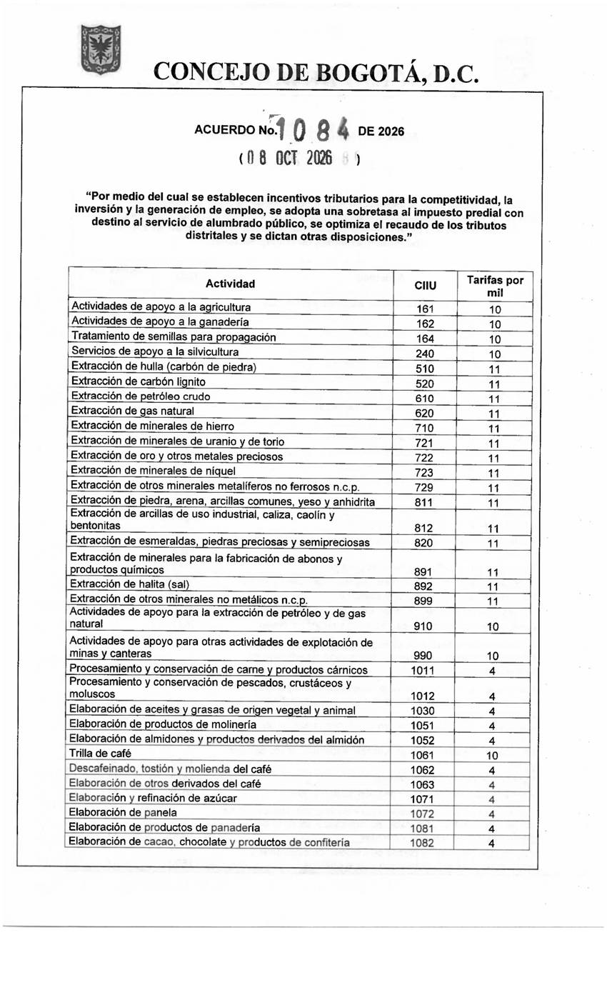
| CIIU | Actividad | Tarifa por mil |
|---|---|---|
| 161 | Actividades de apoyo a la agricultura | 10 |
| 162 | Actividades de apoyo a la ganadería | 10 |
| 164 | Tratamiento de semillas para propagación | 10 |
| 240 | Servicios de apoyo a la silvicultura | 10 |
| 510 | Extracción de hulla (carbón de piedra) | 11 |
| 520 | Extracción de carbón lignito | 11 |
| 610 | Extracción de petróleo crudo | 11 |
| 620 | Extracción de gas natural | 11 |
| 710 | Extracción de minerales de hierro | 11 |
| 721 | Extracción de minerales de uranio y de torio | 11 |
| 722 | Extracción de oro y otros metales preciosos | 11 |
| 723 | Extracción de minerales de níquel | 11 |
| 729 | Extracción de otros minerales metalíferos no ferrosos n.c.p. | 11 |
| 811 | Extracción de piedra, arena, arcillas comunes, yeso y anhidrita | 11 |
| 812 | Extracción de arcillas de uso industrial, caliza, caolín y bentonitas | 11 |
| 820 | Extracción de esmeraldas, piedras preciosas y semipreciosas | 11 |
| 891 | Extracción de minerales para la fabricación de abonos y productos químicos | 11 |
| 892 | Extracción de halita (sal) | 11 |
| 899 | Extracción de otros minerales no metálicos n.c.p. | 11 |
| 910 | Actividades de apoyo para la extracción de petróleo y de gas natural | 10 |
| 990 | Actividades de apoyo para otras actividades de explotación de minas y canteras | 10 |
| 1011 | Procesamiento y conservación de carne y productos cárnicos | 4 |
| 1012 | Procesamiento y conservación de pescados, crustáceos y moluscos | 4 |
| 1030 | Elaboración de aceites y grasas de origen vegetal y animal | 4 |
| 1051 | Elaboración de productos de molinería | 4 |
| 1052 | Elaboración de almidones y productos derivados del almidón | 4 |
| 1061 | Trilla de café | 10 |
| 1062 | Descafeinado, tostión y molienda del café | 4 |
| 1063 | Elaboración de otros derivados del café | 4 |
| 1071 | Elaboración y refinación de azúcar | 4 |
| 1072 | Elaboración de panela | 4 |
| 1081 | Elaboración de productos de panadería | 4 |
| 1082 | Elaboración de cacao, chocolate y productos de confitería | 4 |
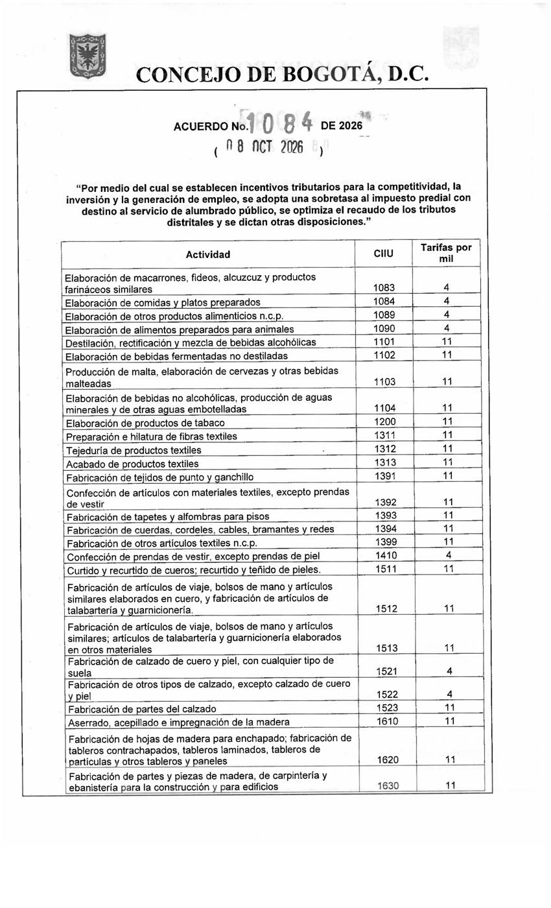
| CIIU | Actividad | Tarifa por mil |
|---|---|---|
| 1083 | Elaboración de macarrones, fideos, alcuzcuz y productos farináceos similares | 4 |
| 1084 | Elaboración de comidas y platos preparados | 4 |
| 1089 | Elaboración de otros productos alimenticios n.c.p. | 4 |
| 1090 | Elaboración de alimentos preparados para animales | 4 |
| 1101 | Destilación, rectificación y mezcla de bebidas alcohólicas | 11 |
| 1102 | Elaboración de bebidas fermentadas no destiladas | 11 |
| 1103 | Producción de malta, elaboración de cervezas y otras bebidas malteadas | 11 |
| 1104 | Elaboración de bebidas no alcohólicas, producción de aguas minerales y de otras aguas embotelladas | 11 |
| 1200 | Elaboración de productos de tabaco | 11 |
| 1311 | Preparación e hilatura de fibras textiles | 11 |
| 1312 | Tejeduría de productos textiles | 11 |
| 1313 | Acabado de productos textiles | 11 |
| 1391 | Fabricación de tejidos de punto y ganchillo | 11 |
| 1392 | Confección de artículos con materiales textiles, excepto prendas de vestir | 11 |
| 1393 | Fabricación de tapetes y alfombras para pisos | 11 |
| 1394 | Fabricación de cuerdas, cordeles, cables, bramantes y redes | 11 |
| 1399 | Fabricación de otros artículos textiles n.c.p. | 11 |
| 1410 | Confección de prendas de vestir, excepto prendas de piel | 4 |
| 1511 | Curtido y recurtido de cueros; recurtido y teñido de pieles. | 11 |
| 1512 | Fabricación de artículos de viaje, bolsos de mano y artículos similares elaborados en cuero, y fabricación de artículos de talabartería y guarnicionería. | 11 |
| 1513 | Fabricación de artículos de viaje, bolsos de mano y artículos similares; artículos de talabartería y guarnicionería elaborados en otros materiales | 11 |
| 1521 | Fabricación de calzado de cuero y piel, con cualquier tipo de suela | 4 |
| 1522 | Fabricación de otros tipos de calzado, excepto calzado de cuero y piel | 4 |
| 1523 | Fabricación de partes del calzado | 11 |
| 1610 | Aserrado, acepillado e impregnación de la madera | 11 |
| 1620 | Fabricación de hojas de madera para enchapado; fabricación de tableros contrachapados, tableros laminados, tableros de partículas y otros tableros y paneles | 11 |
| 1630 | Fabricación de partes y piezas de madera, de carpintería y ebanistería para la construcción y para edificios | 11 |
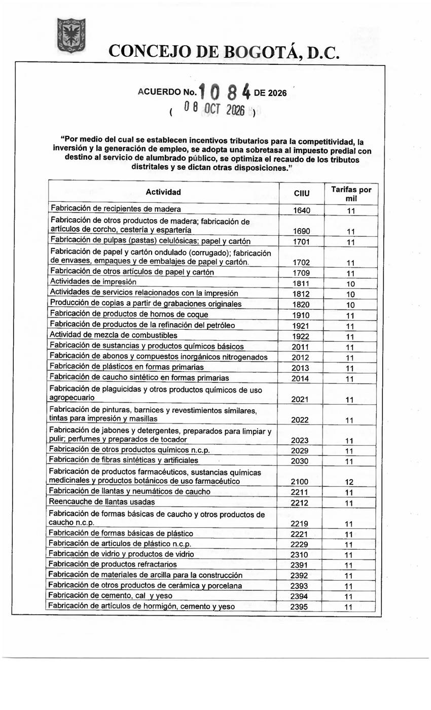
| CIIU | Actividad | Tarifa por mil |
|---|---|---|
| 1640 | Fabricación de recipientes de madera | 11 |
| 1690 | Fabricación de otros productos de madera; fabricación de artículos de corcho, cestería y espartería | 11 |
| 1701 | Fabricación de pulpas (pastas) celulósicas; papel y cartón | 11 |
| 1702 | Fabricación de papel y cartón ondulado (corrugado); fabricación de envases, empaques y de embalajes de papel y cartón. | 11 |
| 1709 | Fabricación de otros artículos de papel y cartón | 11 |
| 1811 | Actividades de impresión | 10 |
| 1812 | Actividades de servicios relacionados con la impresión | 10 |
| 1820 | Producción de copias a partir de grabaciones originales | 10 |
| 1910 | Fabricación de productos de hornos de coque | 11 |
| 1921 | Fabricación de productos de la refinación del petróleo | 11 |
| 1922 | Actividad de mezcla de combustibles | 11 |
| 2011 | Fabricación de sustancias y productos químicos básicos | 11 |
| 2012 | Fabricación de abonos y compuestos inorgánicos nitrogenados | 11 |
| 2013 | Fabricación de plásticos en formas primarias | 11 |
| 2014 | Fabricación de caucho sintético en formas primarias | 11 |
| 2021 | Fabricación de plaguicidas y otros productos químicos de uso agropecuario | 11 |
| 2022 | Fabricación de pinturas, barnices y revestimientos similares, tintas para impresión y masillas | 11 |
| 2023 | Fabricación de jabones y detergentes, preparados para limpiar y pulir; perfumes y preparados de tocador | 11 |
| 2029 | Fabricación de otros productos químicos n.c.p. | 11 |
| 2030 | Fabricación de fibras sintéticas y artificiales | 11 |
| 2100 | Fabricación de productos farmacéuticos, sustancias químicas medicinales y productos botánicos de uso farmacéutico | 12 |
| 2211 | Fabricación de llantas y neumáticos de caucho | 11 |
| 2212 | Reencauche de llantas usadas | 11 |
| 2219 | Fabricación de formas básicas de caucho y otros productos de caucho n.c.p. | 11 |
| 2221 | Fabricación de formas básicas de plástico | 11 |
| 2229 | Fabricación de artículos de plástico n.c.p. | 11 |
| 2310 | Fabricación de vidrio y productos de vidrio | 11 |
| 2391 | Fabricación de productos refractarios | 11 |
| 2392 | Fabricación de materiales de arcilla para la construcción | 11 |
| 2393 | Fabricación de otros productos de cerámica y porcelana | 11 |
| 2394 | Fabricación de cemento, cal y yeso | 11 |
| 2395 | Fabricación de artículos de hormigón, cemento y yeso | 11 |
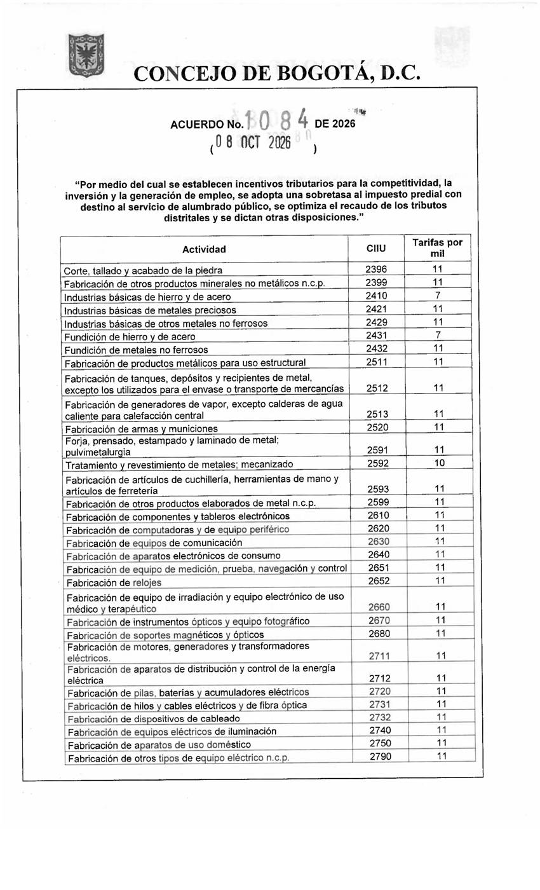
| CIIU | Actividad | Tarifa por mil |
|---|---|---|
| 2396 | Corte, tallado y acabado de la piedra | 11 |
| 2399 | Fabricación de otros productos minerales no metálicos n.c.p. | 11 |
| 2410 | Industrias básicas de hierro y de acero | 7 |
| 2421 | Industrias básicas de metales preciosos | 11 |
| 2429 | Industrias básicas de otros metales no ferrosos | 11 |
| 2431 | Fundición de hierro y de acero | 7 |
| 2432 | Fundición de metales no ferrosos | 11 |
| 2511 | Fabricación de productos metálicos para uso estructural | 11 |
| 2512 | Fabricación de tanques, depósitos y recipientes de metal, excepto los utilizados para el envase o transporte de mercancías | 11 |
| 2513 | Fabricación de generadores de vapor, excepto calderas de agua caliente para calefacción central | 11 |
| 2520 | Fabricación de armas y municiones | 11 |
| 2591 | Forja, prensado, estampado y laminado de metal; pulvimetalurgia | 11 |
| 2592 | Tratamiento y revestimiento de metales; mecanizado | 10 |
| 2593 | Fabricación de artículos de cuchillería, herramientas de mano y artículos de ferretería | 11 |
| 2599 | Fabricación de otros productos elaborados de metal n.c.p. | 11 |
| 2610 | Fabricación de componentes y tableros electrónicos | 11 |
| 2620 | Fabricación de computadoras y de equipo periférico | 11 |
| 2630 | Fabricación de equipos de comunicación | 11 |
| 2640 | Fabricación de aparatos electrónicos de consumo | 11 |
| 2651 | Fabricación de equipo de medición, prueba, navegación y control | 11 |
| 2652 | Fabricación de relojes | 11 |
| 2660 | Fabricación de equipo de irradiación y equipo electrónico de uso médico y terapéutico | 11 |
| 2670 | Fabricación de instrumentos ópticos y equipo fotográfico | 11 |
| 2680 | Fabricación de soportes magnéticos y ópticos | 11 |
| 2711 | Fabricación de motores, generadores y transformadores eléctricos. | 11 |
| 2712 | Fabricación de aparatos de distribución y control de la energía eléctrica | 11 |
| 2720 | Fabricación de pilas, baterías y acumuladores eléctricos | 11 |
| 2731 | Fabricación de hilos y cables eléctricos y de fibra óptica | 11 |
| 2732 | Fabricación de dispositivos de cableado | 11 |
| 2740 | Fabricación de equipos eléctricos de iluminación | 11 |
| 2750 | Fabricación de aparatos de uso doméstico | 11 |
| 2790 | Fabricación de otros tipos de equipo eléctrico n.c.p. | 11 |
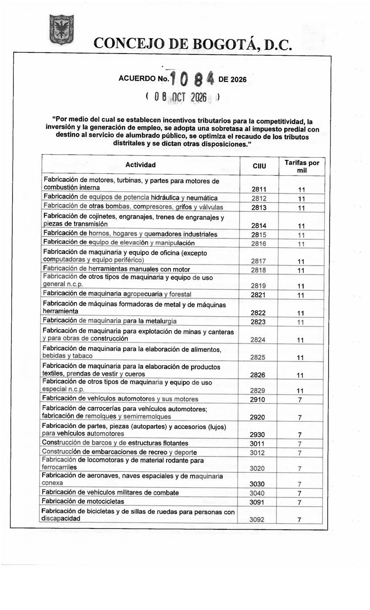
| CIIU | Actividad | Tarifa por mil |
|---|---|---|
| 2811 | Fabricación de motores, turbinas, y partes para motores de combustión interna | 11 |
| 2812 | Fabricación de equipos de potencia hidráulica y neumática | 11 |
| 2813 | Fabricación de otras bombas, compresores, grifos y válvulas | 11 |
| 2814 | Fabricación de cojinetes, engranajes, trenes de engranajes y piezas de transmisión | 11 |
| 2815 | Fabricación de hornos, hogares y quemadores industriales | 11 |
| 2816 | Fabricación de equipo de elevación y manipulación | 11 |
| 2817 | Fabricación de maquinaria y equipo de oficina (excepto computadoras y equipo periférico) | 11 |
| 2818 | Fabricación de herramientas manuales con motor | 11 |
| 2819 | Fabricación de otros tipos de maquinaria y equipo de uso general n.c.p. | 11 |
| 2821 | Fabricación de maquinaria agropecuaria y forestal | 11 |
| 2822 | Fabricación de máquinas formadoras de metal y de máquinas herramienta | 11 |
| 2823 | Fabricación de maquinaria para la metalurgia | 11 |
| 2824 | Fabricación de maquinaria para explotación de minas y canteras y para obras de construcción | 11 |
| 2825 | Fabricación de maquinaria para la elaboración de alimentos, bebidas y tabaco | 11 |
| 2826 | Fabricación de maquinaria para la elaboración de productos textiles, prendas de vestir y cueros | 11 |
| 2829 | Fabricación de otros tipos de maquinaria y equipo de uso especial n.c.p. | 11 |
| 2910 | Fabricación de vehículos automotores y sus motores | 7 |
| 2920 | Fabricación de carrocerías para vehículos automotores; fabricación de remolques y semirremolques | 7 |
| 2930 | Fabricación de partes, piezas (autopartes) y accesorios (lujos) para vehículos automotores | 7 |
| 3011 | Construcción de barcos y de estructuras flotantes | 7 |
| 3012 | Construcción de embarcaciones de recreo y deporte | 7 |
| 3020 | Fabricación de locomotoras y de material rodante para ferrocarriles | 7 |
| 3030 | Fabricación de aeronaves, naves espaciales y de maquinaria conexa | 7 |
| 3040 | Fabricación de vehículos militares de combate | 7 |
| 3091 | Fabricación de motocicletas | 7 |
| 3092 | Fabricación de bicicletas y de sillas de ruedas para personas con discapacidad | 7 |
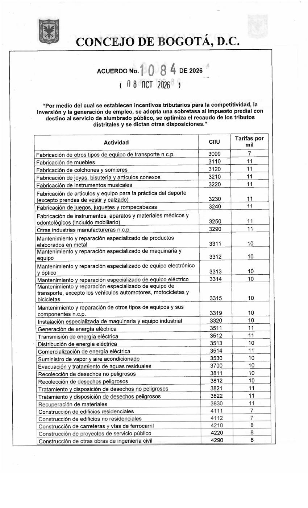
| CIIU | Actividad | Tarifa por mil |
|---|---|---|
| 3099 | Fabricación de otros tipos de equipo de transporte n.c.p. | 7 |
| 3110 | Fabricación de muebles | 11 |
| 3120 | Fabricación de colchones y somieres | 11 |
| 3210 | Fabricación de joyas, bisutería y artículos conexos | 11 |
| 3220 | Fabricación de instrumentos musicales | 11 |
| 3230 | Fabricación de artículos y equipo para la práctica del deporte (excepto prendas de vestir y calzado) | 11 |
| 3240 | Fabricación de juegos, juguetes y rompecabezas | 11 |
| 3250 | Fabricación de instrumentos, aparatos y materiales médicos y odontológicos (incluido mobiliario) | 11 |
| 3290 | Otras industrias manufactureras n.c.p. | 11 |
| 3311 | Mantenimiento y reparación especializado de productos elaborados en metal | 10 |
| 3312 | Mantenimiento y reparación especializado de maquinaria y equipo | 10 |
| 3313 | Mantenimiento y reparación especializado de equipo electrónico y óptico | 10 |
| 3314 | Mantenimiento y reparación especializado de equipo eléctrico | 10 |
| 3315 | Mantenimiento y reparación especializado de equipo de transporte, excepto los vehículos automotores, motocicletas y bicicletas | 10 |
| 3319 | Mantenimiento y reparación de otros tipos de equipos y sus componentes n.c.p. | 10 |
| 3320 | Instalación especializada de maquinaria y equipo industrial | 10 |
| 3511 | Generación de energía eléctrica | 11 |
| 3512 | Transmisión de energía eléctrica | 11 |
| 3513 | Distribución de energía eléctrica | 10 |
| 3514 | Comercialización de energía eléctrica | 11 |
| 3530 | Suministro de vapor y aire acondicionado | 10 |
| 3700 | Evacuación y tratamiento de aguas residuales | 10 |
| 3811 | Recolección de desechos no peligrosos | 10 |
| 3812 | Recolección de desechos peligrosos | 10 |
| 3821 | Tratamiento y disposición de desechos no peligrosos | 11 |
| 3822 | Tratamiento y disposición de desechos peligrosos | 11 |
| 3830 | Recuperación de materiales | 11 |
| 4111 | Construcción de edificios residenciales | 7 |
| 4112 | Construcción de edificios no residenciales | 7 |
| 4210 | Construcción de carreteras y vías de ferrocarril | 8 |
| 4220 | Construcción de proyectos de servicio público | 8 |
| 4290 | Construcción de otras obras de ingeniería civil | 8 |
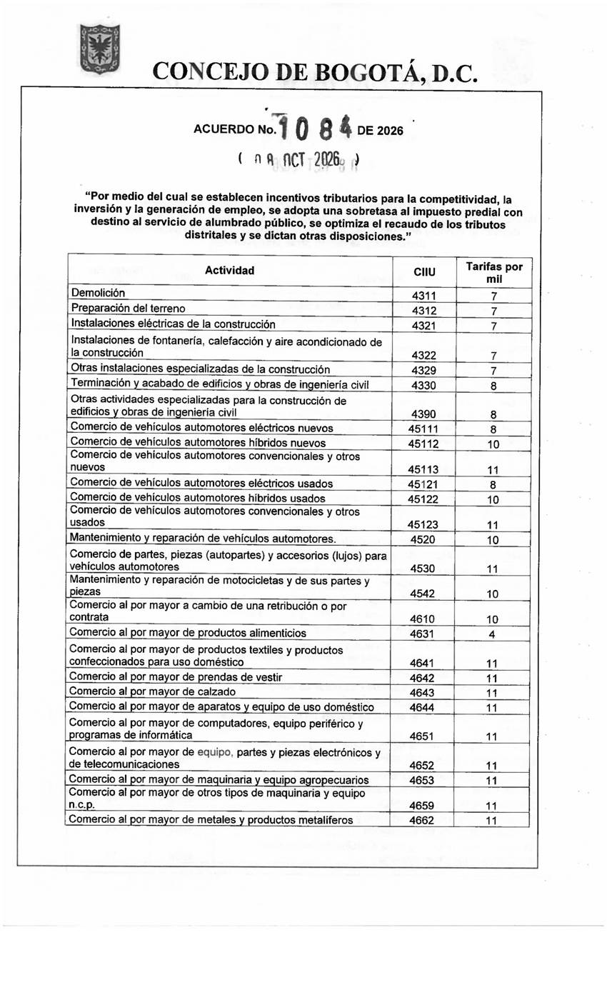
| CIIU | Actividad | Tarifa por mil |
|---|---|---|
| 4311 | Demolición | 7 |
| 4312 | Preparación del terreno | 7 |
| 4321 | Instalaciones eléctricas de la construcción | 7 |
| 4322 | Instalaciones de fontanería, calefacción y aire acondicionado de la construcción | 7 |
| 4329 | Otras instalaciones especializadas de la construcción | 7 |
| 4330 | Terminación y acabado de edificios y obras de ingeniería civil | 8 |
| 4390 | Otras actividades especializadas para la construcción de edificios y obras de ingeniería civil | 8 |
| 45111 | Comercio de vehículos automotores eléctricos nuevos | 8 |
| 45112 | Comercio de vehículos automotores híbridos nuevos | 10 |
| 45113 | Comercio de vehículos automotores convencionales y otros nuevos | 11 |
| 45121 | Comercio de vehículos automotores eléctricos usados | 8 |
| 45122 | Comercio de vehículos automotores híbridos usados | 10 |
| 45123 | Comercio de vehículos automotores convencionales y otros usados | 11 |
| 4520 | Mantenimiento y reparación de vehículos automotores. | 10 |
| 4530 | Comercio de partes, piezas (autopartes) y accesorios (lujos) para vehículos automotores | 11 |
| 4542 | Mantenimiento y reparación de motocicletas y de sus partes y piezas | 10 |
| 4610 | Comercio al por mayor a cambio de una retribución o por contrata | 10 |
| 4631 | Comercio al por mayor de productos alimenticios | 4 |
| 4641 | Comercio al por mayor de productos textiles y productos confeccionados para uso doméstico | 11 |
| 4642 | Comercio al por mayor de prendas de vestir | 11 |
| 4643 | Comercio al por mayor de calzado | 11 |
| 4644 | Comercio al por mayor de aparatos y equipo de uso doméstico | 11 |
| 4651 | Comercio al por mayor de computadores, equipo periférico y programas de informática | 11 |
| 4652 | Comercio al por mayor de equipo, partes y piezas electrónicos y de telecomunicaciones | 11 |
| 4653 | Comercio al por mayor de maquinaria y equipo agropecuarios | 11 |
| 4659 | Comercio al por mayor de otros tipos de maquinaria y equipo n.c.p. | 11 |
| 4662 | Comercio al por mayor de metales y productos metalíferos | 11 |
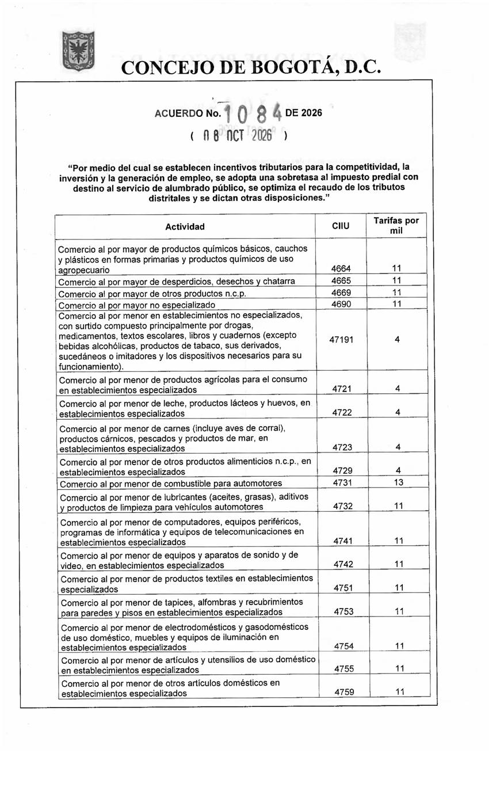
| CIIU | Actividad | Tarifa por mil |
|---|---|---|
| 4664 | Comercio al por mayor de productos químicos básicos, cauchos y plásticos en formas primarias y productos químicos de uso agropecuario | 11 |
| 4665 | Comercio al por mayor de desperdicios, desechos y chatarra | 11 |
| 4669 | Comercio al por mayor de otros productos n.c.p. | 11 |
| 4690 | Comercio al por mayor no especializado | 11 |
| 47191 | Comercio al por menor en establecimientos no especializados, con surtido compuesto principalmente por drogas, medicamentos, textos escolares, libros y cuadernos (excepto bebidas alcohólicas, productos de tabaco, sus derivados, sucedáneos o imitadores y los dispositivos necesarios para su funcionamiento). | 4 |
| 4721 | Comercio al por menor de productos agrícolas para el consumo en establecimientos especializados | 4 |
| 4722 | Comercio al por menor de leche, productos lácteos y huevos, en establecimientos especializados | 4 |
| 4723 | Comercio al por menor de carnes (incluye aves de corral), productos cárnicos, pescados y productos de mar, en establecimientos especializados | 4 |
| 4729 | Comercio al por menor de otros productos alimenticios n.c.p., en establecimientos especializados | 4 |
| 4731 | Comercio al por menor de combustible para automotores | 13 |
| 4732 | Comercio al por menor de lubricantes (aceites, grasas), aditivos y productos de limpieza para vehículos automotores | 11 |
| 4741 | Comercio al por menor de computadores, equipos periféricos, programas de informática y equipos de telecomunicaciones en establecimientos especializados | 11 |
| 4742 | Comercio al por menor de equipos y aparatos de sonido y de video, en establecimientos especializados | 11 |
| 4751 | Comercio al por menor de productos textiles en establecimientos especializados | 11 |
| 4753 | Comercio al por menor de tapices, alfombras y recubrimientos para paredes y pisos en establecimientos especializados | 11 |
| 4754 | Comercio al por menor de electrodomésticos y gasodomésticos de uso doméstico, muebles y equipos de iluminación en establecimientos especializados | 11 |
| 4755 | Comercio al por menor de artículos y utensilios de uso doméstico en establecimientos especializados | 11 |
| 4759 | Comercio al por menor de otros artículos domésticos en establecimientos especializados | 11 |
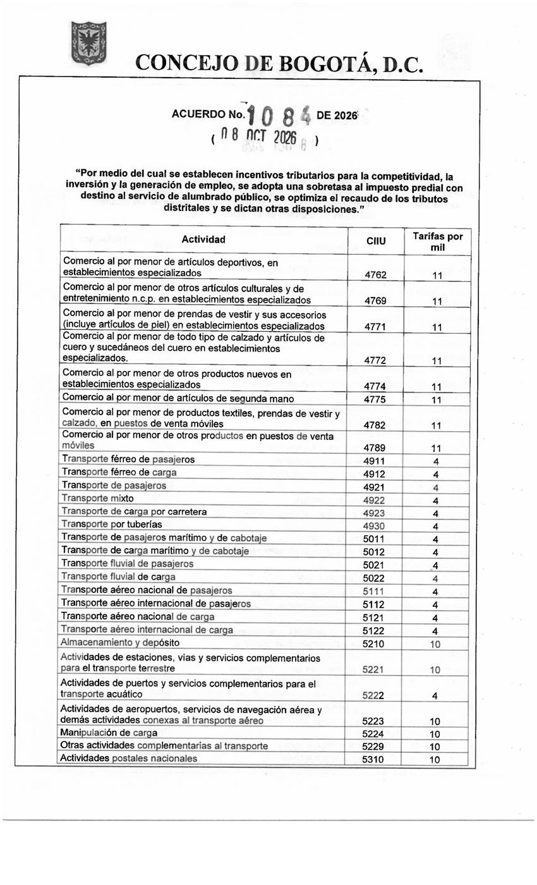
| CIIU | Actividad | Tarifa por mil |
|---|---|---|
| 4762 | Comercio al por menor de artículos deportivos, en establecimientos especializados | 11 |
| 4769 | Comercio al por menor de otros artículos culturales y de entretenimiento n.c.p. en establecimientos especializados | 11 |
| 4771 | Comercio al por menor de prendas de vestir y sus accesorios (incluye artículos de piel) en establecimientos especializados | 11 |
| 4772 | Comercio al por menor de todo tipo de calzado y artículos de cuero y sucedáneos del cuero en establecimientos especializados. | 11 |
| 4774 | Comercio al por menor de otros productos nuevos en establecimientos especializados | 11 |
| 4775 | Comercio al por menor de artículos de segunda mano | 11 |
| 4782 | Comercio al por menor de productos textiles, prendas de vestir y calzado, en puestos de venta móviles | 11 |
| 4789 | Comercio al por menor de otros productos en puestos de venta móviles | 11 |
| 4911 | Transporte férreo de pasajeros | 4 |
| 4912 | Transporte férreo de carga | 4 |
| 4921 | Transporte de pasajeros | 4 |
| 4922 | Transporte mixto | 4 |
| 4923 | Transporte de carga por carretera | 4 |
| 4930 | Transporte por tuberías | 4 |
| 5011 | Transporte de pasajeros marítimo y de cabotaje | 4 |
| 5012 | Transporte de carga marítimo y de cabotaje | 4 |
| 5021 | Transporte fluvial de pasajeros | 4 |
| 5022 | Transporte fluvial de carga | 4 |
| 5111 | Transporte aéreo nacional de pasajeros | 4 |
| 5112 | Transporte aéreo internacional de pasajeros | 4 |
| 5121 | Transporte aéreo nacional de carga | 4 |
| 5122 | Transporte aéreo internacional de carga | 4 |
| 5210 | Almacenamiento y depósito | 10 |
| 5221 | Actividades de estaciones, vías y servicios complementarios para el transporte terrestre | 10 |
| 5222 | Actividades de puertos y servicios complementarios para el transporte acuático | 4 |
| 5223 | Actividades de aeropuertos, servicios de navegación aérea y demás actividades conexas al transporte aéreo | 10 |
| 5224 | Manipulación de carga | 10 |
| 5229 | Otras actividades complementarias al transporte | 10 |
| 5310 | Actividades postales nacionales | 10 |
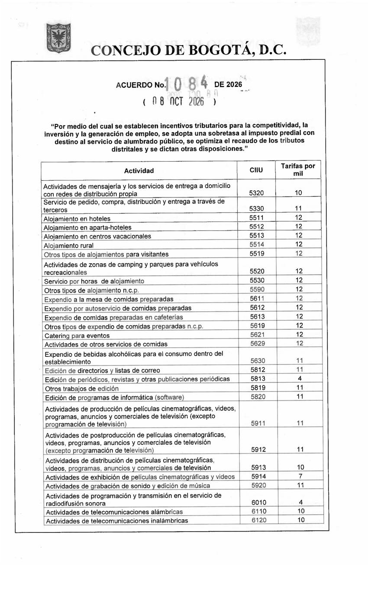
| CIIU | Actividad | Tarifa por mil |
|---|---|---|
| 5320 | Actividades de mensajería y los servicios de entrega a domicilio con redes de distribución propia | 10 |
| 5330 | Servicio de pedido, compra, distribución y entrega a través de terceros | 11 |
| 5511 | Alojamiento en hoteles | 12 |
| 5512 | Alojamiento en aparta-hoteles | 12 |
| 5513 | Alojamiento en centros vacacionales | 12 |
| 5514 | Alojamiento rural | 12 |
| 5519 | Otros tipos de alojamientos para visitantes | 12 |
| 5520 | Actividades de zonas de camping y parques para vehículos recreacionales | 12 |
| 5530 | Servicio por horas de alojamiento | 12 |
| 5590 | Otros tipos de alojamiento n.c.p. | 12 |
| 5611 | Expendio a la mesa de comidas preparadas | 12 |
| 5612 | Expendio por autoservicio de comidas preparadas | 12 |
| 5613 | Expendio de comidas preparadas en cafeterías | 12 |
| 5619 | Otros tipos de expendio de comidas preparadas n.c.p. | 12 |
| 5621 | Catering para eventos | 12 |
| 5629 | Actividades de otros servicios de comidas | 12 |
| 5630 | Expendio de bebidas alcohólicas para el consumo dentro del establecimiento | 11 |
| 5812 | Edición de directorios y listas de correo | 11 |
| 5813 | Edición de periódicos, revistas y otras publicaciones periódicas | 4 |
| 5819 | Otros trabajos de edición | 11 |
| 5820 | Edición de programas de informática (software) | 11 |
| 5911 | Actividades de producción de películas cinematográficas, videos, programas, anuncios y comerciales de televisión (excepto programación de televisión) | 11 |
| 5912 | Actividades de postproducción de películas cinematográficas, videos, programas, anuncios y comerciales de televisión (excepto programación de televisión) | 11 |
| 5913 | Actividades de distribución de películas cinematográficas, videos, programas, anuncios y comerciales de televisión | 10 |
| 5914 | Actividades de exhibición de películas cinematográficas y videos | 7 |
| 5920 | Actividades de grabación de sonido y edición de música | 11 |
| 6010 | Actividades de programación y transmisión en el servicio de radiodifusión sonora | 4 |
| 6110 | Actividades de telecomunicaciones alámbricas | 10 |
| 6120 | Actividades de telecomunicaciones inalámbricas | 10 |
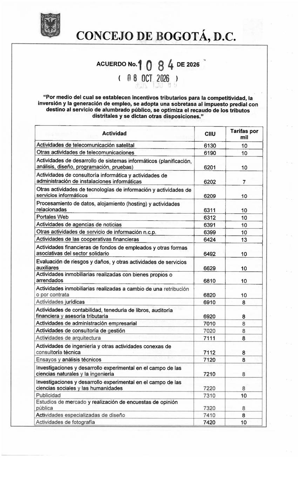
| CIIU | Actividad | Tarifa por mil |
|---|---|---|
| 6130 | Actividades de telecomunicación satelital | 10 |
| 6190 | Otras actividades de telecomunicaciones | 10 |
| 6201 | Actividades de desarrollo de sistemas informáticos (planificación, análisis, diseño, programación, pruebas) | 10 |
| 6202 | Actividades de consultoría informática y actividades de administración de instalaciones informáticas | 7 |
| 6209 | Otras actividades de tecnologías de información y actividades de servicios informáticos | 10 |
| 6311 | Procesamiento de datos, alojamiento (hosting) y actividades relacionadas | 10 |
| 6312 | Portales Web | 10 |
| 6391 | Actividades de agencias de noticias | 10 |
| 6399 | Otras actividades de servicio de información n.c.p. | 10 |
| 6424 | Actividades de las cooperativas financieras | 13 |
| 6492 | Actividades financieras de fondos de empleados y otras formas asociativas del sector solidario | 10 |
| 6629 | Evaluación de riesgos y daños, y otras actividades de servicios auxiliares | 10 |
| 6810 | Actividades inmobiliarias realizadas con bienes propios o arrendados | 10 |
| 6820 | Actividades inmobiliarias realizadas a cambio de una retribución o por contrata | 10 |
| 6910 | Actividades jurídicas | 8 |
| 6920 | Actividades de contabilidad, teneduría de libros, auditoría financiera y asesoría tributaria | 8 |
| 7010 | Actividades de administración empresarial | 8 |
| 7020 | Actividades de consultoría de gestión | 8 |
| 7111 | Actividades de arquitectura | 8 |
| 7112 | Actividades de ingeniería y otras actividades conexas de consultoría técnica | 8 |
| 7120 | Ensayos y análisis técnicos | 8 |
| 7210 | Investigaciones y desarrollo experimental en el campo de las ciencias naturales y la ingeniería | 8 |
| 7220 | Investigaciones y desarrollo experimental en el campo de las ciencias sociales y las humanidades | 8 |
| 7310 | Publicidad | 10 |
| 7320 | Estudios de mercado y realización de encuestas de opinión pública | 8 |
| 7410 | Actividades especializadas de diseño | 8 |
| 7420 | Actividades de fotografía | 10 |
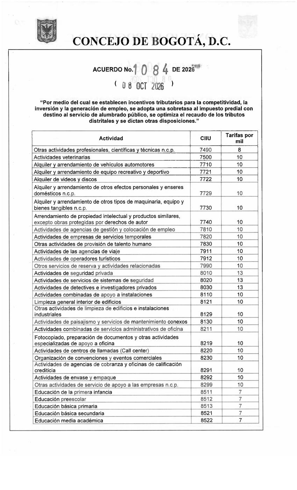
| CIIU | Actividad | Tarifa por mil |
|---|---|---|
| 7490 | Otras actividades profesionales, científicas y técnicas n.c.p. | 8 |
| 7500 | Actividades veterinarias | 10 |
| 7710 | Alquiler y arrendamiento de vehículos automotores | 10 |
| 7721 | Alquiler y arrendamiento de equipo recreativo y deportivo | 10 |
| 7722 | Alquiler de videos y discos | 10 |
| 7729 | Alquiler y arrendamiento de otros efectos personales y enseres domésticos n.c.p. | 10 |
| 7730 | Alquiler y arrendamiento de otros tipos de maquinaria, equipo y bienes tangibles n.c.p. | 10 |
| 7740 | Arrendamiento de propiedad intelectual y productos similares, excepto obras protegidas por derechos de autor | 10 |
| 7810 | Actividades de agencias de gestión y colocación de empleo | 10 |
| 7820 | Actividades de empresas de servicios temporales | 10 |
| 7830 | Otras actividades de provisión de talento humano | 10 |
| 7911 | Actividades de las agencias de viaje | 10 |
| 7912 | Actividades de operadores turísticos | 10 |
| 7990 | Otros servicios de reserva y actividades relacionadas | 10 |
| 8010 | Actividades de seguridad privada | 13 |
| 8020 | Actividades de servicios de sistemas de seguridad | 13 |
| 8030 | Actividades de detectives e investigadores privados | 13 |
| 8110 | Actividades combinadas de apoyo a instalaciones | 10 |
| 8121 | Limpieza general interior de edificios | 10 |
| 8129 | Otras actividades de limpieza de edificios e instalaciones industriales | 10 |
| 8130 | Actividades de paisajismo y servicios de mantenimiento conexos | 10 |
| 8211 | Actividades combinadas de servicios administrativos de oficina | 10 |
| 8219 | Fotocopiado, preparación de documentos y otras actividades especializadas de apoyo a oficina | 10 |
| 8220 | Actividades de centros de llamadas (Call center) | 10 |
| 8230 | Organización de convenciones y eventos comerciales | 10 |
| 8291 | Actividades de agencias de cobranza y oficinas de calificación crediticia | 10 |
| 8292 | Actividades de envase y empaque | 10 |
| 8299 | Otras actividades de servicio de apoyo a las empresas n.c.p. | 10 |
| 8511 | Educación de la primera infancia | 7 |
| 8512 | Educación preescolar | 7 |
| 8513 | Educación básica primaria | 7 |
| 8521 | Educación básica secundaria | 7 |
| 8522 | Educación media académica | 7 |
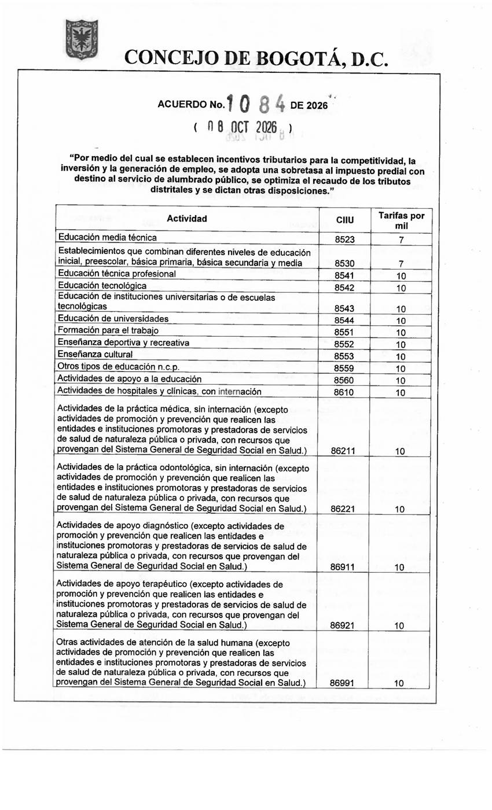
| CIIU | Actividad | Tarifa por mil |
|---|---|---|
| 8523 | Educación media técnica | 7 |
| 8530 | Establecimientos que combinan diferentes niveles de educación inicial, preescolar, básica primaria, básica secundaria y media | 7 |
| 8541 | Educación técnica profesional | 10 |
| 8542 | Educación tecnológica | 10 |
| 8543 | Educación de instituciones universitarias o de escuelas tecnológicas | 10 |
| 8544 | Educación de universidades | 10 |
| 8551 | Formación para el trabajo | 10 |
| 8552 | Enseñanza deportiva y recreativa | 10 |
| 8553 | Enseñanza cultural | 10 |
| 8559 | Otros tipos de educación n.c.p. | 10 |
| 8560 | Actividades de apoyo a la educación | 10 |
| 8610 | Actividades de hospitales y clínicas, con internación | 10 |
| 86211 | Actividades de la práctica médica, sin internación (excepto actividades de promoción y prevención que realicen las entidades e instituciones promotoras y prestadoras de servicios de salud de naturaleza pública o privada, con recursos que provengan del Sistema General de Seguridad Social en Salud.) | 10 |
| 86221 | Actividades de la práctica odontológica, sin internación (excepto actividades de promoción y prevención que realicen las entidades e instituciones promotoras y prestadoras de servicios de salud de naturaleza pública o privada, con recursos que provengan del Sistema General de Seguridad Social en Salud.) | 10 |
| 86911 | Actividades de apoyo diagnóstico (excepto actividades de promoción y prevención que realicen las entidades e instituciones promotoras y prestadoras de servicios de salud de naturaleza pública o privada, con recursos que provengan del Sistema General de Seguridad Social en Salud.) | 10 |
| 86921 | Actividades de apoyo terapéutico (excepto actividades de promoción y prevención que realicen las entidades e instituciones promotoras y prestadoras de servicios de salud de naturaleza pública o privada, con recursos que provengan del Sistema General de Seguridad Social en Salud.) | 10 |
| 86991 | Otras actividades de atención de la salud humana (excepto actividades de promoción y prevención que realicen las entidades e instituciones promotoras y prestadoras de servicios de salud de naturaleza pública o privada, con recursos que provengan del Sistema General de Seguridad Social en Salud.) | 10 |
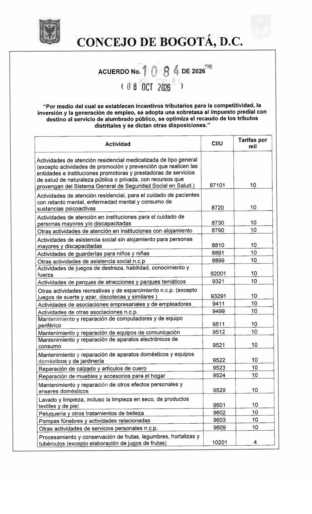
| CIIU | Actividad | Tarifa por mil |
|---|---|---|
| 87101 | Actividades de atención residencial medicalizada de tipo general (excepto actividades de promoción y prevención que realicen las entidades e instituciones promotoras y prestadoras de servicios de salud de naturaleza pública o privada, con recursos que provengan del Sistema General de Seguridad Social en Salud.) | 10 |
| 8720 | Actividades de atención residencial, para el cuidado de pacientes con retardo mental, enfermedad mental y consumo de sustancias psicoactivas | 10 |
| 8730 | Actividades de atención en instituciones para el cuidado de personas mayores y/o discapacitadas | 10 |
| 8790 | Otras actividades de atención en instituciones con alojamiento | 10 |
| 8810 | Actividades de asistencia social sin alojamiento para personas mayores y discapacitadas | 10 |
| 8891 | Actividades de guarderías para niños y niñas | 10 |
| 8899 | Otras actividades de asistencia social n.c.p | 10 |
| 92001 | Actividades de juegos de destreza, habilidad, conocimiento y fuerza | 10 |
| 9321 | Actividades de parques de atracciones y parques temáticos | 10 |
| 93291 | Otras actividades recreativas y de esparcimiento n.c.p. (excepto juegos de suerte y azar, discotecas y similares ) | 10 |
| 9411 | Actividades de asociaciones empresariales y de empleadores | 10 |
| 9499 | Actividades de otras asociaciones n.c.p. | 10 |
| 9511 | Mantenimiento y reparación de computadores y de equipo periférico | 10 |
| 9512 | Mantenimiento y reparación de equipos de comunicación | 10 |
| 9521 | Mantenimiento y reparación de aparatos electrónicos de consumo | 10 |
| 9522 | Mantenimiento y reparación de aparatos domésticos y equipos domésticos y de jardinería | 10 |
| 9523 | Reparación de calzado y artículos de cuero | 10 |
| 9524 | Reparación de muebles y accesorios para el hogar | 10 |
| 9529 | Mantenimiento y reparación de otros efectos personales y enseres domésticos | 10 |
| 9601 | Lavado y limpieza, incluso la limpieza en seco, de productos textiles y de piel | 10 |
| 9602 | Peluquería y otros tratamientos de belleza | 10 |
| 9603 | Pompas fúnebres y actividades relacionadas | 10 |
| 9609 | Otras actividades de servicios personales n.c.p. | 10 |
| 10201 | Procesamiento y conservación de frutas, legumbres, hortalizas y tubérculos (excepto elaboración de jugos de frutas) | 4 |
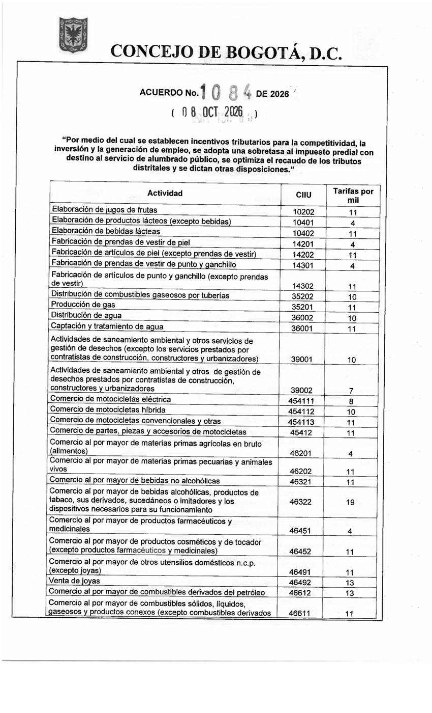
| CIIU | Actividad | Tarifa por mil |
|---|---|---|
| 10202 | Elaboración de jugos de frutas | 11 |
| 10401 | Elaboración de productos lácteos (excepto bebidas) | 4 |
| 10402 | Elaboración de bebidas lácteas | 11 |
| 14201 | Fabricación de prendas de vestir de piel | 4 |
| 14202 | Fabricación de artículos de piel (excepto prendas de vestir) | 11 |
| 14301 | Fabricación de prendas de vestir de punto y ganchillo | 4 |
| 14302 | Fabricación de artículos de punto y ganchillo (excepto prendas de vestir) | 11 |
| 35202 | Distribución de combustibles gaseosos por tuberías | 10 |
| 35201 | Producción de gas | 11 |
| 36002 | Distribución de agua | 10 |
| 36001 | Captación y tratamiento de agua | 11 |
| 39001 | Actividades de saneamiento ambiental y otros servicios de gestión de desechos (excepto los servicios prestados por contratistas de construcción, constructores y urbanizadores) | 10 |
| 39002 | Actividades de saneamiento ambiental y otros de gestión de desechos prestados por contratistas de construcción, constructores y urbanizadores | 7 |
| 454111 | Comercio de motocicletas eléctrica | 8 |
| 454112 | Comercio de motocicletas híbrida | 10 |
| 454113 | Comercio de motocicletas convencionales y otras | 11 |
| 45412 | Comercio de partes, piezas y accesorios de motocicletas | 11 |
| 46201 | Comercio al por mayor de materias primas agrícolas en bruto (alimentos) | 4 |
| 46202 | Comercio al por mayor de materias primas pecuarias y animales vivos | 11 |
| 46321 | Comercio al por mayor de bebidas no alcohólicas | 11 |
| 46322 | Comercio al por mayor de bebidas alcohólicas, productos de tabaco, sus derivados, sucedáneos o imitadores y los dispositivos necesarios para su funcionamiento | 19 |
| 46451 | Comercio al por mayor de productos farmacéuticos y medicinales | 4 |
| 46452 | Comercio al por mayor de productos cosméticos y de tocador (excepto productos farmacéuticos y medicinales) | 11 |
| 46491 | Comercio al por mayor de otros utensilios domésticos n.c.p. (excepto joyas) | 11 |
| 46492 | Venta de joyas | 13 |
| 46612 | Comercio al por mayor de combustibles derivados del petróleo | 13 |
| 46611 | Comercio al por mayor de combustibles sólidos, líquidos, gaseosos y productos conexos (excepto combustibles derivados del petróleo) | 11 |
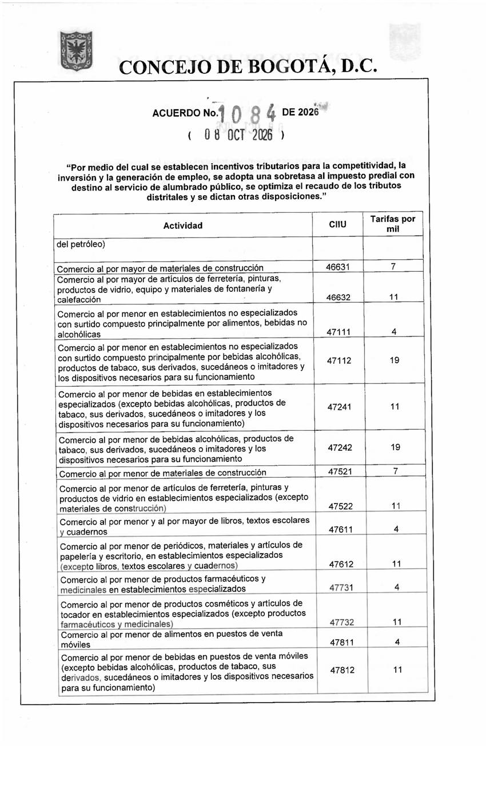
| CIIU | Actividad | Tarifa por mil |
|---|---|---|
| 46631 | Comercio al por mayor de materiales de construcción | 7 |
| 46632 | Comercio al por mayor de artículos de ferretería, pinturas, productos de vidrio, equipo y materiales de fontanería y calefacción | 11 |
| 47111 | Comercio al por menor en establecimientos no especializados con surtido compuesto principalmente por alimentos, bebidas no alcohólicas | 4 |
| 47112 | Comercio al por menor en establecimientos no especializados con surtido compuesto principalmente por bebidas alcohólicas, productos de tabaco, sus derivados, sucedáneos o imitadores y los dispositivos necesarios para su funcionamiento | 19 |
| 47241 | Comercio al por menor de bebidas en establecimientos especializados (excepto bebidas alcohólicas, productos de tabaco, sus derivados, sucedáneos o imitadores y los dispositivos necesarios para su funcionamiento) | 11 |
| 47242 | Comercio al por menor de bebidas alcohólicas, productos de tabaco, sus derivados, sucedáneos o imitadores y los dispositivos necesarios para su funcionamiento | 19 |
| 47521 | Comercio al por menor de materiales de construcción | 7 |
| 47522 | Comercio al por menor de artículos de ferretería, pinturas y productos de vidrio en establecimientos especializados (excepto materiales de construcción) | 11 |
| 47611 | Comercio al por menor y al por mayor de libros, textos escolares y cuadernos | 4 |
| 47612 | Comercio al por menor de periódicos, materiales y artículos de papelería y escritorio, en establecimientos especializados (excepto libros, textos escolares y cuadernos) | 11 |
| 47731 | Comercio al por menor de productos farmacéuticos y medicinales en establecimientos especializados | 4 |
| 47732 | Comercio al por menor de productos cosméticos y artículos de tocador en establecimientos especializados (excepto productos farmacéuticos y medicinales) | 11 |
| 47811 | Comercio al por menor de alimentos en puestos de venta móviles | 4 |
| 47812 | Comercio al por menor de bebidas en puestos de venta móviles (excepto bebidas alcohólicas, productos de tabaco, sus derivados, sucedáneos o imitadores y los dispositivos necesarios para su funcionamiento) | 11 |
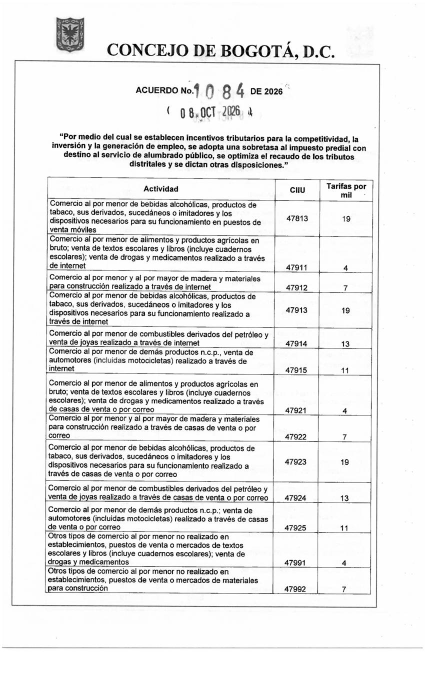
| CIIU | Actividad | Tarifa por mil |
|---|---|---|
| 47813 | Comercio al por menor de bebidas alcohólicas, productos de tabaco, sus derivados, sucedáneos o imitadores y los dispositivos necesarios para su funcionamiento en puestos de venta móviles | 19 |
| 47911 | Comercio al por menor de alimentos y productos agrícolas en bruto; venta de textos escolares y libros (incluye cuadernos escolares); venta de drogas y medicamentos realizado a través de internet | 4 |
| 47912 | Comercio al por menor y al por mayor de madera y materiales para construcción realizado a través de internet | 7 |
| 47913 | Comercio al por menor de bebidas alcohólicas, productos de tabaco, sus derivados, sucedáneos o imitadores y los dispositivos necesarios para su funcionamiento realizado a través de internet | 19 |
| 47914 | Comercio al por menor de combustibles derivados del petróleo y venta de joyas realizado a través de internet | 13 |
| 47915 | Comercio al por menor de demás productos n.c.p., venta de automotores (incluidas motocicletas) realizado a través de internet | 11 |
| 47921 | Comercio al por menor de alimentos y productos agrícolas en bruto; venta de textos escolares y libros (incluye cuadernos escolares); venta de drogas y medicamentos realizado a través de casas de venta o por correo | 4 |
| 47922 | Comercio al por menor y al por mayor de madera y materiales para construcción realizado a través de casas de venta o por correo | 7 |
| 47923 | Comercio al por menor de bebidas alcohólicas, productos de tabaco, sus derivados, sucedáneos o imitadores y los dispositivos necesarios para su funcionamiento realizado a través de casas de venta o por correo | 19 |
| 47924 | Comercio al por menor de combustibles derivados del petróleo y venta de joyas realizado a través de casas de venta o por correo | 13 |
| 47925 | Comercio al por menor de demás productos n.c.p.; venta de automotores (incluidas motocicletas) realizado a través de casas de venta o por correo | 11 |
| 47991 | Otros tipos de comercio al por menor no realizado en establecimientos, puestos de venta o mercados de textos escolares y libros (incluye cuadernos escolares); venta de drogas y medicamentos | 4 |
| 47992 | Otros tipos de comercio al por menor no realizado en establecimientos, puestos de venta o mercados de materiales para construcción | 7 |
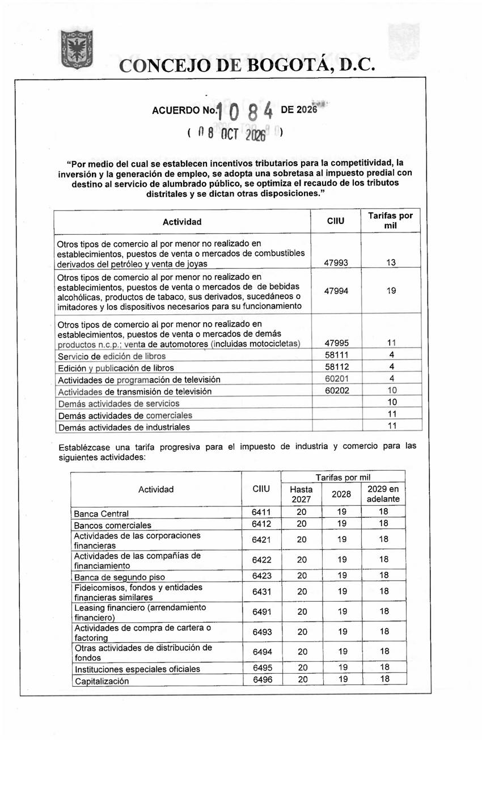
| CIIU | Actividad | Tarifa por mil |
|---|---|---|
| 47993 | Otros tipos de comercio al por menor no realizado en establecimientos, puestos de venta o mercados de combustibles derivados del petróleo y venta de joyas | 13 |
| 47994 | Otros tipos de comercio al por menor no realizado en establecimientos, puestos de venta o mercados de bebidas alcohólicas, productos de tabaco, sus derivados, sucedáneos o imitadores y los dispositivos necesarios para su funcionamiento | 19 |
| 47995 | Otros tipos de comercio al por menor no realizado en establecimientos, puestos de venta o mercados de demás productos n.c.p.; venta de automotores (incluidas motocicletas) | 11 |
| 58111 | Servicio de edición de libros | 4 |
| 58112 | Edición y publicación de libros | 4 |
| 60201 | Actividades de programación de televisión | 4 |
| 60202 | Actividades de transmisión de televisión | 10 |
| Clase | Tarifa por mil |
|---|---|
| servicios | 10 |
| comerciales | 11 |
| industriales | 11 |
| CIIU | Actividad | Hasta 2027 | 2028 | Desde 2029 |
|---|---|---|---|---|
| 6411 | Banca Central | 20 | 19 | 18 |
| 6412 | Bancos comerciales | 20 | 19 | 18 |
| 6421 | Actividades de las corporaciones financieras | 20 | 19 | 18 |
| 6422 | Actividades de las compañías de financiamiento | 20 | 19 | 18 |
| 6423 | Banca de segundo piso | 20 | 19 | 18 |
| 6431 | Fideicomisos, fondos y entidades financieras similares | 20 | 19 | 18 |
| 6491 | Leasing financiero (arrendamiento financiero) | 20 | 19 | 18 |
| 6493 | Actividades de compra de cartera o factoring | 20 | 19 | 18 |
| 6494 | Otras actividades de distribución de fondos | 20 | 19 | 18 |
| 6495 | Instituciones especiales oficiales | 20 | 19 | 18 |
| 6496 | Capitalización | 20 | 19 | 18 |
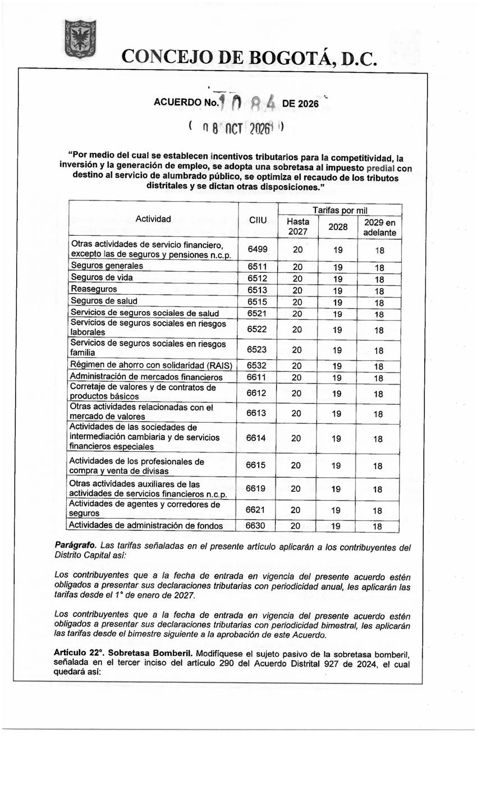
| CIIU | Actividad | Hasta 2027 | 2028 | Desde 2029 |
|---|---|---|---|---|
| 6499 | Otras actividades de servicio financiero, excepto las de seguros y pensiones n.c.p. | 20 | 19 | 18 |
| 6511 | Seguros generales | 20 | 19 | 18 |
| 6512 | Seguros de vida | 20 | 19 | 18 |
| 6513 | Reaseguros | 20 | 19 | 18 |
| 6515 | Seguros de salud | 20 | 19 | 18 |
| 6521 | Servicios de seguros sociales de salud | 20 | 19 | 18 |
| 6522 | Servicios de seguros sociales en riesgos laborales | 20 | 19 | 18 |
| 6523 | Servicios de seguros sociales en riesgos familia | 20 | 19 | 18 |
| 6532 | Régimen de ahorro con solidaridad (RAIS) | 20 | 19 | 18 |
| 6611 | Administración de mercados financieros | 20 | 19 | 18 |
| 6612 | Corretaje de valores y de contratos de productos básicos | 20 | 19 | 18 |
| 6613 | Otras actividades relacionadas con el mercado de valores | 20 | 19 | 18 |
| 6614 | Actividades de las sociedades de intermediación cambiaria y de servicios financieros especiales | 20 | 19 | 18 |
| 6615 | Actividades de los profesionales de compra y venta de divisas | 20 | 19 | 18 |
| 6619 | Otras actividades auxiliares de las actividades de servicios financieros n.c.p. | 20 | 19 | 18 |
| 6621 | Actividades de agentes y corredores de seguros | 20 | 19 | 18 |
| 6630 | Actividades de administración de fondos | 20 | 19 | 18 |
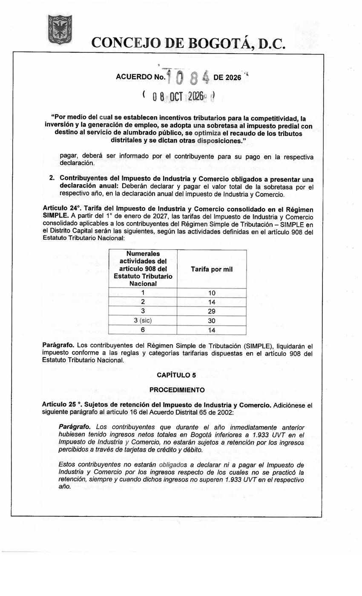
Texto digital del Régimen Legal e imagen de la página 47 del PDF coinciden; el OCR dejó incompletas las filas de los numerales 2 y 3.
| Numeral del art. 908 del ET | Tarifa por mil |
|---|---|
| 1 | 10 |
| 2 | 14 |
| 3 | 29 |
| 3 (sic) | 30 |
| 6 | 14 |
| Tabla | Filas en el texto digital | Filas en el YAML | Diferencias |
|---|---|---|---|
| ICA consolidado del SIMPLE, art. 24 | 5 | 5 | 0 |
| ICA consolidado del SIMPLE 2026, art. 44 del Acuerdo 1019 de 2025 | 5 | 5 | 0 |